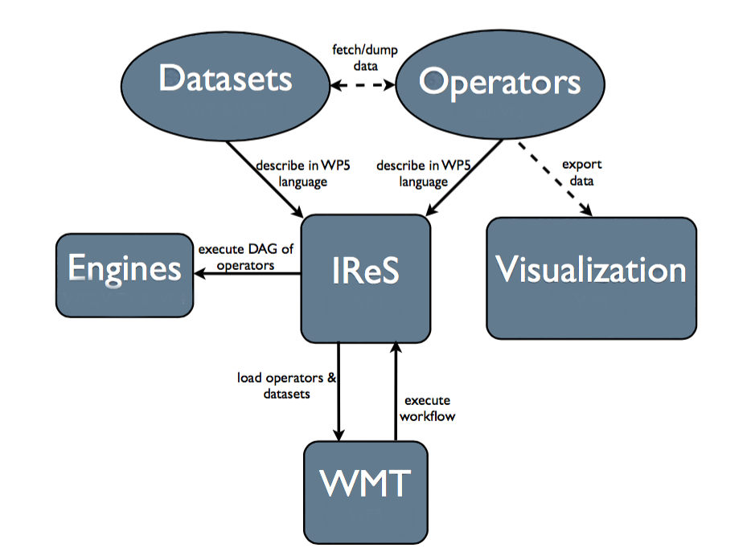

Introduction¶
Overview¶
ASAP focuses on (i) innovative methods and technologies and (ii) tools and applications. Regarding methods and technology, we develop novel methods in order to model cost and performance of multiple data stores and analytics execution engines. Building on these, we perform automated job scheduling to multiple runtime and data store technologies together with real-time tracking of intermediate results. To deliver this technology to the end user, we couple it with state-of-the-art visualization tools enabling both qualitative and quantitative monitoring of a job’s performance and cost. The integrated technology enables fast, easy development and submission of both simple and highly complex analytics tasks that take full advantage of the existing resources according to user requirements. Overall, ASAP delivers open source tools that can be used both separately and as an integrated system in order to provide efficient execution and management of complex analytics tasks. The figure below shows the separate components of the ASAP system along with their interactions. For more details read the corresponding chapter.
